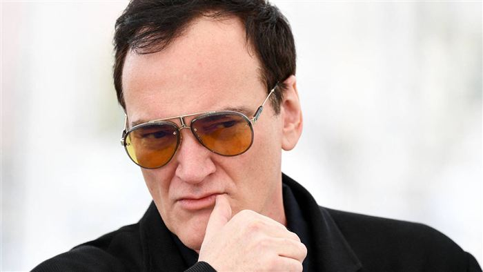
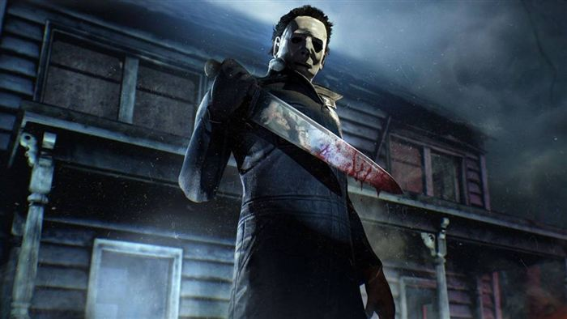
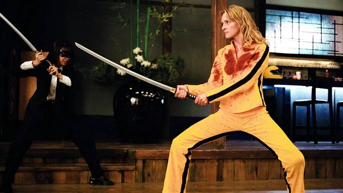
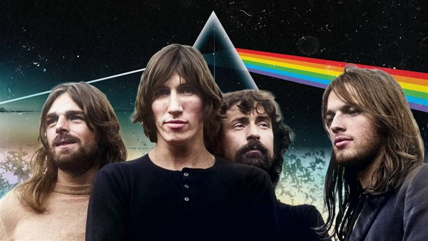
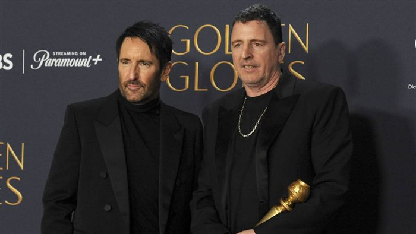
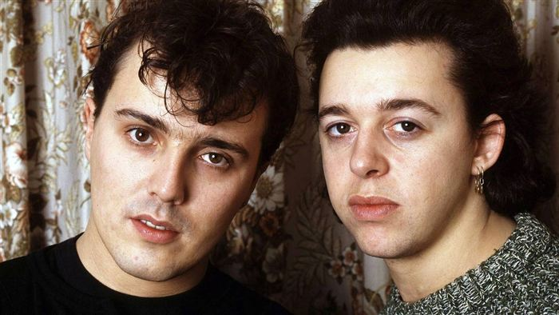
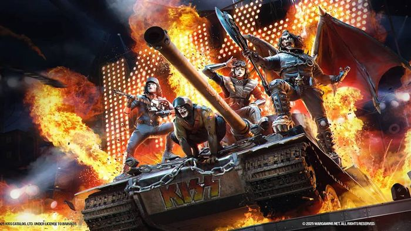

ScreenRant

The Art of the Perfect Needle Drop: Iconic Movie Music Moments
28 September 2025
10 Scariest Horror Soundtracks Of All Time, Ranked
27 October 2025Breakups, Clashes, And Chaos: Rock's Messiest Meltdowns
5 October 2025
5 Killer Cuts That Make Tarantino's Kill Bill His Best Film
10 October 2025
10 Rock Bands That Lost Their Magic When An Original Member Left
7 September 20255 Bands That Made The Greatest Comebacks In Rock History
22 September 2025
5 Music Legends Who Went From Rock Gods To Hollywood Heavyweights
1 October 2025
Why This Most Used Song In TV And Film Still Rules 40 Years Later
24 September 2025
Farewell To Ace: How Kiss's Frehley Revolutionized the Stagecraft Of Rock
17 October 2025Nine Inch Nails' TRON: Ares Soundtrack: A Synth-Heavy Homage To Daft Punk
20 September 2025'Deliver Me From Nowhere': Springsteen Biopic Divides Critics And Fans
24 October 2025Drake & Lola Young's Courtroom Showdowns: Who Owns The Art?
13 October 2025